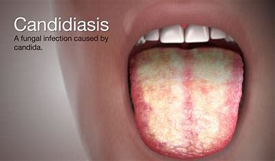

=¿QUÉ ES LA CANDIDIASIS?=
La candidiasis es una afección cutánea consecuencia de parasitación de "hongos", vegetales que no efectúan el fenómeno de la fotosíntesis. Forma parte del grupo de las enfermedades más frecuentes que afectan al hombre. Se puede afirmar que, prácticamente, todos los hombres a lo largo de su vida la padecerán alguna vez.
|
=SINTOMAS=
Sensación de ardor y prurito en los labios vaginales.
Dolor al miccionar.
Flujo vaginal anorma, que fluctúa de una sustancia blanca acuosa a una abundante y espesa.
Inflamación y enrojecimiento de la piel exterior de la vulva.
Dolor al mantener relaciones sexuales.
vaginismo
Sensación de ardor al orinar
Enrojecimiento e hinchazón de la vulva.
|
CAUSAS
El hongo Candida albicans es responsable de la mayoría de las infecciones por hongos vaginales.
Tu vagina naturalmente contiene una mezcla equilibrada de hongos, entre ellos cándida, y bacterias. Ciertas bacterias (lactobacillus) actúan para evitar el crecimiento excesivo de hongos.
Sin embargo, ese equilibrio puede perturbarse. El crecimiento excesivo de cándida o la penetración del hongo en capas celulares vaginales más profundas provocan los signos y síntomas de una infección por hongos.
El crecimiento excesivo de hongos puede ser causado por lo siguiente:
Uso de antibióticos, que provoca un desequilibrio en la flora vaginal natural
Embarazo
Diabetes no controlada
Sistema inmunitario deteriorado
Consumo de anticonceptivos orales o terapia hormonal que aumenta los niveles de estrógeno
Candida albicans es el tipo de hongo que más comúnmente provoca infecciones por hongos. Las infecciones por hongos provocadas por otros hongos de este tipo pueden ser más difíciles de tratar y generalmente requieren tratamiento más agresivo.
FACTORES DE RIESGO
Algunos de los factores que aumentan el riesgo de contraer candidiasis vaginal incluyen los siguientes:
Uso de antibióticos. La candidiasis vaginal es frecuente en mujeres que toman antibióticos. Los antibióticos de amplio espectro, que eliminan una serie de bacterias, también eliminan las bacterias saludables de la vagina, lo que produce una proliferación excesiva de levaduras.
Aumento de los niveles de estrógeno. La candidiasis vaginal es más común en mujeres con niveles más elevados de estrógeno, como mujeres embarazadas o que toman píldoras anticonceptivas con altas dosis de estrógeno o terapia hormonal con estrógeno.
Diabetes no controlada. Las mujeres que tienen un nivel de glucosa en la sangre mal controlado tienen un mayor riesgo de contraer candidiasis vaginal que las mujeres con glucosa en la sangre bien controlada.
Sistema inmunitario alterado. Las mujeres con inmunidad reducida, debido a una terapia con corticoides o a una infección por el virus de la inmunodeficiencia humana (VIH), son más propensas a contraer candidiasis vaginal.
PREVENCION
Para reducir el riesgo de infecciones vaginales por hongos, usa ropa interior con entrepierna de algodón y que no te quede muy ajustada.
Además, evitar lo que se menciona a continuación podría ayudarte:
Pantimedias ajustadas
Duchas, que eliminan algunas de las bacterias normales en la vagina que te protegen de las infecciones
Productos femeninos perfumados, tales como baño de espuma, toallas higiénicas y tampones.
Jacuzzis y baños muy calientes
Uso innecesario de antibióticos; por ejemplo, para resfríos u otras infecciones virales
Permanecer con ropa mojada, como trajes de baño y ropa deportiva, durante largos períodos de tiempo
CANDIDIASIS INTERTRIGO
El intertrigo es la inflamación de la piel debido a la fricción y acumulación de
humedad, causando comezón, enrojecimiento en la piel, y favoreciendo la multiplicación
de microorganismos como hongos y bacterias.
Normalmente, el intertrigo surge en pliegues, como axilas, entre los dedos de las manos
y pies, ingle y barriga, y en la parte interna de los muslos, siendo más común en personas
con obesidad y diabetes.
CANDIDIASIS INEONATAL
La candidiasis neonatal es una infección por hongos que ocurre en los recién nacidos.Es
causada principalmente por el hongo Candida albicans, aunque otros tipos de Candida
también pueden estar involucrados. Esta infección puede afectar la boca del bebé y
requiere atención médica12.
CANDIDIASIS ORAL
La candidiasis oral es una infección muy habitual de la cavidad oral. Solemos preocuparnos
por la transmisión y el contagio de este hongo, pero, como veremos, no es tan habitual como creemos.
La candidiasis oral suele manifestarse en forma de manchas blancas en la boca y generalmente
basta con una visita al dentista para que nos indique el tratamiento adecuado.

← regresar